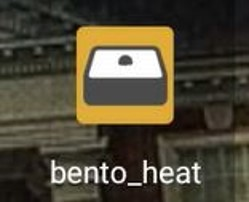
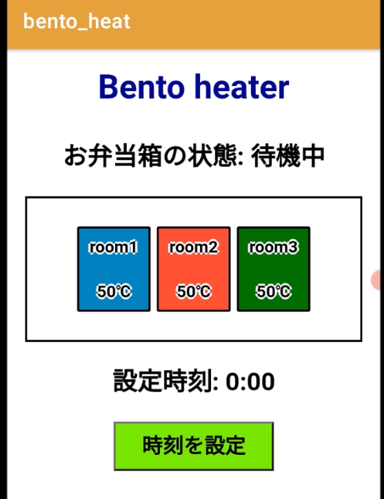
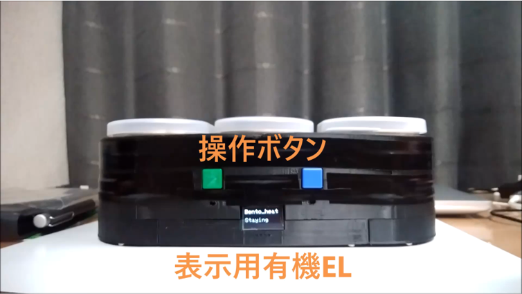
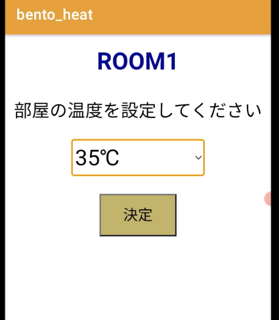

冷たいお弁当を温めたい
冷えた弁当を食べる経験から、電気で再加熱できる持ち運び用の弁当箱を製作しました。3つの部屋をそれぞれ温度制御し、食べたい時間に温めることを目指しました。 この作品は、team phantomでの企画から製作まで私が担当しました。
弁当箱とスマートフォンをつなぐ
ESP32、PTCヒーター、温度センサーを搭載し、Android Studioで製作したアプリから目標温度と加熱終了時間を設定します。GPSによる置き忘れ防止や、傾きを検知したメール通知にも取り組みました。
試作と大会で分かったこと
ヒーター用バッテリーの重さや、熱による筐体の歪みが課題でした。アプリは弁当箱と同じネットワークに接続する必要もありました。iCAN国内予選では入賞に至りませんでしたが、温度制御とアプリを組み合わせた試作を行いました。
制作の記録



